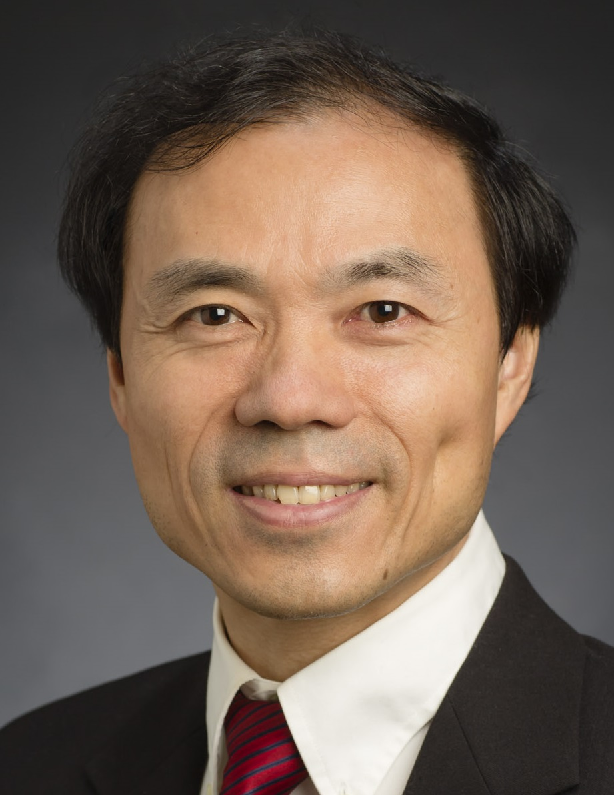
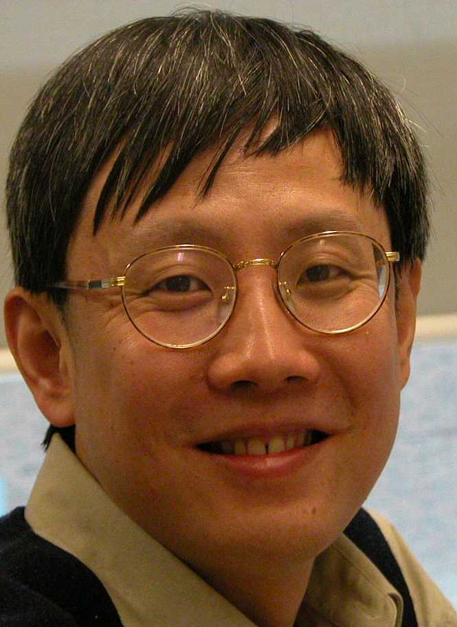
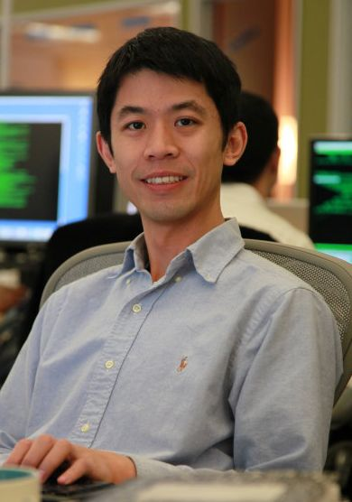
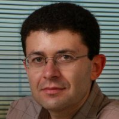
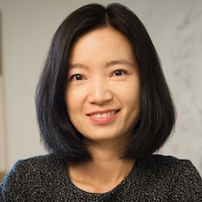
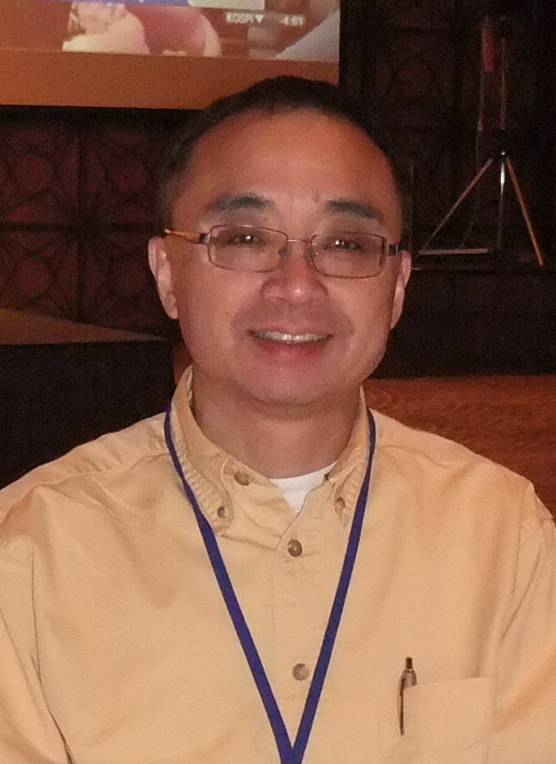

Organizing Committee
General Chair
-
Yi Chang
Huawei Research America -
 Chengxiang Zhai
University of Illinois Urbana-Champaign
PC Chair
-
 Yan Liu
Yan Liu
University of Southern California -
Yoelle Maarek
Amazon
Treasurer
-
 Jimmy Huang
York University
Local Chair
-
Roger Luo
Snapchat
VC & Industry Day Chair
-
 Rong Yan
Snapchat -
 Evgeniy Gabrilovich
Google Research
Tutorial Chair
-
David Carmel
Amazon Research -
Jaap Kamps
University of Amsterdam
Workshop Chair
-
Jiliang Tang
Michigan State University -
Eugene Agichtein
Emory University
WSDM Cup Chair
-
 Shou-De Lin
Shou-De Lin
National Taiwan University -
Xing Xie
Microsoft Research
Doctoral Consortium Chair
-
 Yizhou Sun
University of California, Los Angeles -
Hui Fang
University of Delaware
Best Paper Award Chair
-
Charlies Clarke
Facebook -
 Huan Liu
Arizona State University
Test of Time Award Chair
-
Fernando Diaz
Spotify
Sponsorship Co-Chair
-
Dawei Yin
JD.com -
Shipeng Yu
LinkedIn
Media and Publicity Chair
-
Zhaochun Ren
JD.com -
Makoto Yamada
RIKEN AIP
Poster & Demo Chair
-
Hongning Wang
University of Virginia
Proceedings Chair
-
 Qi (Rose) Yu
Qi (Rose) Yu
Caltech -
Jianhui Chen
Yahoo Research
Workflow Chair
-
Natali Ruchansky
Hush, Inc.
Web Chair
-
 Yaguang Li
Yaguang Li
University of Southern California
WSDM Steering Committee
-
Paolo Boldi
University of Milano -
Brian Davison
Lehigh University -
Susan Dumais
Microsoft -
Nick Koudas
University of Toronto -
 Hang Li
Hang Li
Toutiao -
Yoelle Maarek
Amazon -
Marc Najork
Google (Chair) -
Jian Pei
Simon Fraser University
Senior Program Committee
- Lada Adamic (Facebook Inc)
- Eytan Adar (University of Washington)
- Deepak Agarwal (LinkedIn)
- Charu Aggarwal (IBM)
- Eugene Agichtein (Emory University)
- Leman Akoglu (Carnegie Mellon University)
- James Allan (UMass Amherst)
- Aris Anagnostopoulos (Sapienza University of Rome)
- Ricardo Baeza-Yates (NTENT)
- Roberto Bayardo (Google)
- Paul Bennett (Microsoft Research)
- Edward Bortnikov (Yahoo Research)
- Jamie Callan (Carnegie Mellon University)
- Ed H. Chi (Google, Inc.)
- Charles Clarke (Facebook)
- Koby Crammer (The Technion)
- Brian Davison (Lehigh University)
- Maarten de Rijke (University of Amsterdam)
- Arjen de Vries (Radboud University)
- Fernando Diaz (Spotify)
- Aristides Gionis (Aalto University)
- Manuel Gomez Rodriguez (MPI for Software Systems)
- Jimmy Huang (York University)
- Ravi Kumar (Google)
- Oren Kurland (Technion, Israel Institute of Technology)
- Mounia Lalmas (Yahoo Research)
- Ronny Lempel (Outbrain)
- Kristina Lerman (University of Southern California)
- Jure Leskovec (Stanford University)
- Liane Lewin-Eytan (Amazon Reseasrch)
- Hang Li (Toutiao)
- Edo Liberty (Amazon)
- Ee-Peng Lim (Singapore Management University)
- Shou-De Lin (National Taiwan University)
- Bing Liu (University of Illinois at Chicago)
- Huan Liu (Arizona State University)
- Qiaozhu Mei (University of Michigan)
- Alistair Moffat (The University of Melbourne)
- Marc Najork (Google)
- Jennifer Neville (Purdue University)
- Jian Pei (Simon Fraser University)
- Dan Pelleg (Yahoo Research)
- B. Aditya Prakash (Virginia Tech)
- Kira Radinsky (eBay)
- Filip Radlinski (Google)
- Dafna Shahaf (The Hebrew University of Jerusalem)
- Dou Shen (Microsoft Adcenter Labs)
- Fabrizio Silvestri (Facebook)
- Aya Soffer (IBM)
- Le Song (Georgia Tech)
- Jie Tang (Tsinghua University)
- Andrew Tomkins (Google)
- Hongning Wang (University of Virginia)
- Wei Wang (UCLA)
- Ryen W. White (Microsoft Research)
- Makoto Yamada (RIKEN AIP)
- Emine Yilmaz (University College London)
- Dawei Yin (jd.com)
- Hongyuan Zha (Georgia Institute of Technology)
- Min Zhang (Tsinghua University)
Program Committee Members
- Abdullah Mueen (University of New Mexico)
- Adam Fourney (Microsoft)
- Adam Jatowt (Kyoto University)
- Adith Swaminathan (Microsoft)
- Aditya Pal (Pinterest)
- Ahmed Hassan Awadallah (Microsoft Research)
- Aixin Sun (Nanyang Technological University)
- Aleksandr Chuklin (Google Research Europe)
- Alessandro Epasto (Google)
- Alex Beutel (Google)
- Alexander Kotov (Wayne State University)
- Amir Ingber (Amazon)
- Amit Goyal (IIIT Hyderabad)
- Aneesh Sharma (Google)
- Anirban Dasgupta (IIT Gandhinagar)
- Anne Schuth (Google Research London)
- Anthony Wirth (The University of Melbourne)
- Antti Ukkonen (University of Helsinki)
- Arnd Christian König (Microsoft)
- Aston Zhang (Amazon AI)
- Austin Benson (Cornell University)
- Azin Ashkan (Google)
- Baharan Mirzasoleiman (ETH Zurich)
- Ben Carterette (University of Delaware)
- Ben He (University of Chinese Academy of Sciences)
- Ben Zhao (University of Chicago)
- Benjamin Moseley (Carnegie Mellon University)
- Benoit Dumoulin (Facebook)
- Bin Gao (Microsoft)
- Branislav Kveton (Adobe Research)
- C. Seshadhri (University of California, Santa Cruz)
- Carlos Castillo (Universitat Pompeu Fabra)
- Carsten Eickhoff (ETH Zurich)
- Cedric Archambeau (Amazon)
- Chandan Reddy (Virginia Tech)
- Charalampos Tsourakakis (Harvard University)
- Cheng Li (University of Michigan)
- Cheng-Te Li (National Cheng Kung University)
- Chenyan Xiong (Carnegie Mellon University)
- Chi Wang (Microsoft)
- Christina Lioma (University of Copenhagen)
- Christo Wilson (Northeastern University)
- Chuan Shi (Beijing University of Posts and Telecommunications)
- Claudia Hauff (Delft University of Technology)
- Craig Macdonald (University of Glasgow)
- Daifeng Li (Sun Yet-sen University)
- Damien Lefortier (Facebook)
- Danai Koutra (University of Michigan)
- Daniel Romero (University of Michigan)
- Daniele Quercia (Nokia Bell Labs Cambridge)
- David Jurgens (Stanford University)
- Denis Savenkov (Emory university)
- Edgar Meij (Bloomberg L.P.)
- Elad Yom-Tov (Microsoft)
- Emre Kıcıman (Microsoft)
- Evangelos Kanoulas (University of Amsterdam)
- Evangelos Papalexakis (University of California Riverside)
- Evimaria Terzi (Boston University)
- Fangzhao Wu (Tsinghua University)
- Fangzhao Wu (Microsoft)
- Farshad Kooti (Facebook)
- Fei Cai (National University of Defense Technology)
- Fiana Raiber (Yahoo Research)
- Fred Morstatter (University of Southern California)
- Freddy Chua (Singapore Management University)
- Gabriele Tolomei (University of Padua)
- Gianmarco De Francisci Morales (Qatar Computing Research Institute)
- Grace Hui Yang (Georgetown University)
- Guido Zuccon (Queensland University of Technology)
- Guoliang Li (Tsinghua University)
- Haggai Roitman (IBM Research AI)
- Hamed Zamani (University of Massachusetts Amherst)
- Hanghang Tong (Arizona State University)
- Hao Ma (Microsoft)
- Hau Chan (University of Nebraska-Lincoln)
- Hongbo Deng (Google)
- Hsun-Ping Hsieh (National Cheng Kung University)
- Huaiyu Wan (Beijing Jiaotong University)
- Huan Gui (Facebook)
- Hui Fang (University of Delaware)
- Idan Szpektor (Google)
- Ido Guy (eBay)
- Iftah Gamzu (Amazon)
- Ilaria Bordino (UniCredit R&D)
- Imed Zitouni (Microsoft)
- Ingmar Weber (Qatar Computing Research Institute)
- Ioannis Arapakis (Telefonica Research)
- Isabel Valera (MPI for Intelligent Systems)
- Ismail Sengor Altingovde (Middle East Technical University)
- Jaap Kamps (University of Amsterdam)
- James Caverlee (Texas A&M University)
- Jeffrey Xu Yu (Department of Systems Engineering & Engineering Management, Chinese University of Hong Kong)
- Jiafeng Guo (Institute of Computing Technology)
- Jian Tang (HEC Montreal & MILA)
- Jiang Bian (Microsoft)
- Jianyong Wang (Tsinghua University)
- Jian-Yun Nie (University of Montreal)
- Jiepu Jiang (College of Information and Computer Sciences, University of Massachusetts Amherst)
- Jiliang Tang (Michigan State University)
- Jimmy Lin (University of Waterloo)
- Jing Gao (University at Buffalo)
- Jingrui He (Arizona State University)
- Joemon Jose (University of Glasgow)
- Johan Ugander (Stanford University)
- John Foley (University of Massachusetts Amherst)
- Julia Kiseleva (UserSat.com & University of Amsterdam)
- Julian Mcauley (University of California San Diego)
- Jun Xu (Institute of Computing Technology, Chinese Academy of Sciences)
- Karthik Subbian (Facebook)
- Ke Zhou (University of Nottingham)
- Kohei Hayashi (Tokyo Institute of Technology)
- Konstantinos Dimopoulos (Amazon)
- Konstantinos Pelechrinis (University of Pittsburgh)
- Kostas Kollias (Google)
- Kostas Tsioutsiouliklis (Yahoo Research)
- Krishna Gummadi (MPI-SWS)
- Krisztian Balog (University of Stavanger)
- Laura Dietz (University of New Hampshire)
- Liangda Li (Yahoo Research)
- Liangjie Hong (Etsy Inc.)
- Lingfei Wu (IBM Research AI)
- Lingyang Chu (Simon Fraser University)
- Liudmila Ostroumova Prokhorenkova (Yandex)
- Luca Becchetti (Sapienza University of Rome)
- Luca Maria Aiello (Nokia Bell Labs)
- Ludovico Boratto (Eurecat)
- Makoto P. Kato (Kyoto University)
- Marc Bron (Yahoo Labs)
- Marie-Francine Moens (Katholieke Universiteit Leuven)
- Maryam Karimzadehgan (Google)
- Mauro Sozio (Télécom ParisTech)
- Max Vladymyrov (Google)
- Maxim Gurevich (Uber)
- Meng Jiang (University of Notre Dame)
- Michael Bendersky (Google)
- Michael Cole (LexisNexis)
- Michael Mathioudakis (Aalto University)
- Michele Catasta (Stanford University)
- Mihajlo Grbovic (Airbnb)
- Mi-Yen Yeh (Institute of Information Science, Academia Sinica)
- Muhammad Bilal Zafar (MPI-SWS)
- Myunghwan Kim (LinkedIn Corporation)
- Nadav Golbandi (Google)
- Nan Du (Google)
- Natali Ruchansky (University of Southern California)
- Neil O'Hare (Yahoo!)
- Nemanja Djuric (Uber ATG)
- Nick Craswell (Microsoft)
- Nicola Tonellotto (ISTI-CNR)
- Nir Grinberg (Northeastern and Harvard University)
- Niranjan Balasubramanian (Stony Brook University)
- Nitin Agarwal (University of Arkansas at Little Rock)
- Oleg Rokhlenko (Amazon)
- Omar Alonso (Microsoft)
- Oren Somekh (Yahoo Research)
- Ovidiu Dan (Lehigh University)
- Panayiotis Tsaparas (University of Ioannina)
- Parang Saraf (Virginia Tech)
- Parikshit Sondhi (Neulogic Inc.)
- Partha Talukdar (Indian Institute of Science)
- Pauli Miettinen (Max Planck Institute for Informatics)
- Peng Cui (Tsinghua University)
- Pu-Jen Cheng (Dept. of CSIE, National Taiwan University)
- Qi Zhang (Fudan University)
- Qi Zhao (Google)
- Quan Wang (Chinese Academy of Sciences)
- Raffaele Perego (ISTI-CNR)
- Reza Zafarani (Syracuse University)
- Robert West (EPFL)
- Rodrygo Santos (Universidade Federal de Minas Gerais)
- Rossano Schifanella (University of Turin)
- Ruihua Song (Microsoft)
- Ruining He (Pinterest)
- Sameep Mehta (IBM, India Research Lab)
- Sanjay Chawla (Qatar Computing Research Institute, HBKU)
- Sanjay Purushotham (University of Southern California)
- Sergei Vassilvitskii (Google)
- Shane Culpepper (RMIT University)
- Shangsong Liang (University College London)
- Shiyu Chang (IBM Research)
- Shuai Ding (Google)
- Shuai Li (Cambridge University)
- Shuaiqiang Wang (The University of Manchester)
- Silvio Lattanzi (Google)
- Spiros Papadimitriou (Rutgers University)
- Srijan Kumar (Stanford University)
- Srinivasan Parthasarathy (The Ohio State University)
- Steffen Rendle (Google)
- Stergios Stergiou (Google)
- Sujith Ravi (Google)
- Takanori Maehara (RIKEN Center for Advanced Intelligence Project)
- Tao Yang (Ask.com and UCSB)
- Tijl De Bie (Ghent University)
- Tim Althoff (Stanford University)
- Tobias Schnabel (Cornell University)
- Torsten Suel (New York University)
- U Kang (Seoul National University)
- Udo Kruschwitz (University of Essex)
- Vladan Radosavljevic (Uber Advanced Technology Group)
- Wai Lam (The Chinese University of Hong Kong)
- Wei Ai (University of Michigan)
- Wei Lu (Rupert Labs)
- Wei Wu (Microsoft)
- Wei Zhang (East China Normal University)
- Weinan Zhang (Shanghai Jiao Tong University)
- William Hamilton (Stanford University)
- Xia Ben Hu (Texas A&M University)
- Xiang Ren (University of Southern California)
- Xiang Zhang (The Pennsylvania State University)
- Xiangnan He (National University of Singapore)
- Xiao Bai (Yahoo Research)
- Xiao Yu (Google)
- Xiaolu Lu (RMIT University)
- Xin Jiang (Huawei Noah's Ark Lab)
- Xinran He (University of Southern California)
- Xuanhui Wang (Google)
- Xuanjing Huang (Fudan University)
- Yanen Li (University of Illinois at Urbana-Champaign)
- Yang Song (Google)
- Yang Yang (Tsinghua University)
- Yanyan Lan (ICT)
- Yelena Mejova (Qatar Computing Research Institute)
- Yi Fang (Santa Clara University)
- Yifan Hu (Yahoo Research)
- Yintao Roger Yu (University of Illinois at Urbana-Champaign)
- Yiqun Liu (Tsinghua University)
- Yizhou Sun (University of California, Los Angeles)
- Yongfeng Zhang (University of Massachusetts Amherst)
- Yu Wang (Otto Radio, Inc.)
- Yubin Kim (Carnegie Mellon University)
- Yue Wang (University of Michigan)
- Yuxiao Dong (Microsoft)
- Zhaochun Ren (JD.com)
- Zhe Zhao (Google)
- Zhenhui Li (The Pennsylvania State University)
- Zhicheng Dou (Renmin University of China)
- Zhijun Yin (Facebook)
- Zohar Karnin (Yahoo Labs)
- Zornitsa Kozareva (Amazon)
Best Paper Award Committee
- Aristides Gionis (Aalto University)
- Charles Clarke (Facebook, Co-chair)
- Don Metzler (Google)
- Fernando Diaz (Spotify)
- Huan Liu (Arizona State University, Co-chair)
- Meeyoung Cha (Korea Advanced Institute of Science and Technology)
- Parthasarathy Srinivasan (The Ohio State University)
- Qiaozhu Mei (University of Michigan)
- Tat-Seng Chua (National University of Singapore)
- Tina Eliassi-Rad (Northeastern University)
- Zoran Obradovic (Temple University)
Program Committee - FAQ
How can I be invited as a Senior Program Committee (SPC) member?
You are personally known to one of the Program Chairs or Conference Chairs as an expert in your domain who had good judgement about the type and quality of papers we are looking to publish at WSDM. You have a strong publication track record in your domain. You are known to be reliable and responsive.
How can I be invited as a Program Committee (PC) member?
You are personally recommended by an SPC or a Program/Conference Chair. You have been a PC member at a leading international related conference in recent years and have published at least one paper at WSDM, WWW, KDD, SIGIR, CIKM or related conferences. Consider approaching relevant SPC members in person if you are interested in being nominated as a PC member.